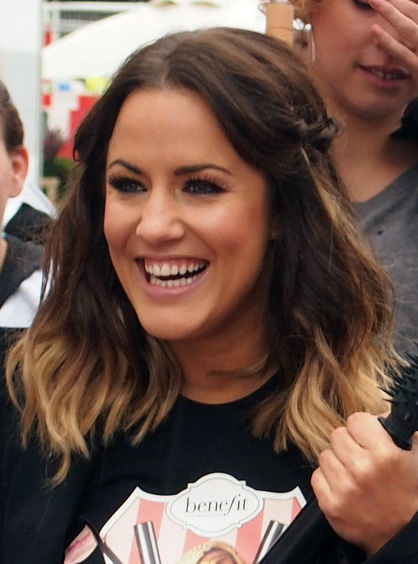
flack · portrait
Caroline Flack.jpg
Caroline Flack at a public event, photographed 15 June 2012. The image predates the 2020 coverage sample.
Author: Scottish Beauty Blog
License: CC BY 2.0
Changes: Unmodified Commons file; credits retain the Commons file-page attribution.
Commons file page ↗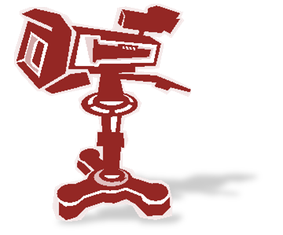
flack · generic media context
Tv studio camera.png
A generic illustration of a television studio camera; not a photograph of Caroline Flack or of the coverage period.
Author: Nasib Bitar
License: Public domain (author dedication)
Changes: Unmodified Commons file.
Commons file page ↗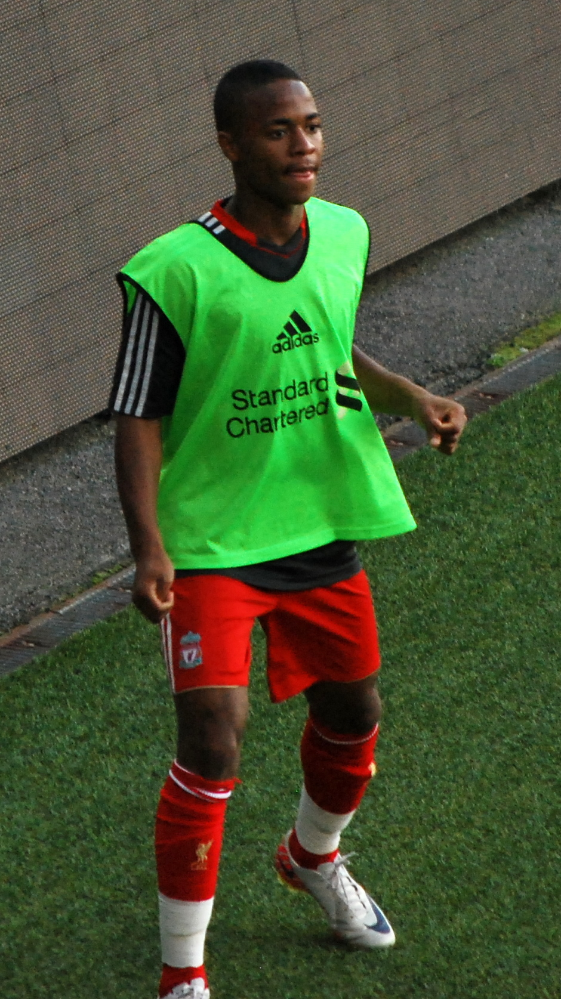
sterling · portrait / football context
Raheem Sterling 2011.jpg
Raheem Sterling during Liverpool pre-season in 2011. This predates the 2016 and 2018 sample windows.
Author: Inge Knoff
License: CC BY-SA 2.0
Changes: Unmodified Commons file.
Commons file page ↗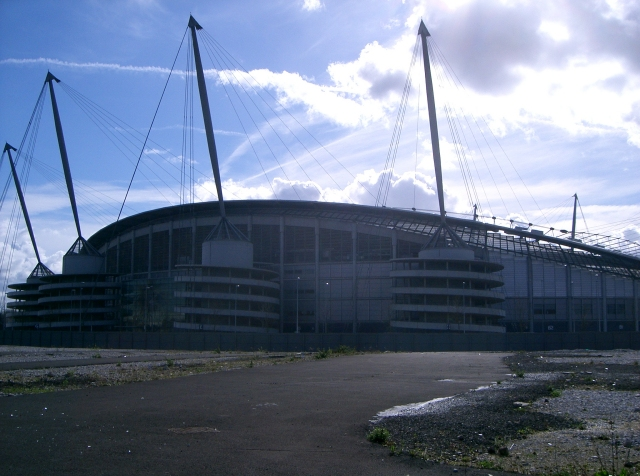
sterling · football venue context
City of Manchester Stadium.jpg
Etihad Stadium (then called City of Manchester Stadium), photographed in 2005; a location illustration, not case-period coverage.
Author: Gary Barber
License: CC BY-SA 2.0
Changes: Unmodified Commons file.
Commons file page ↗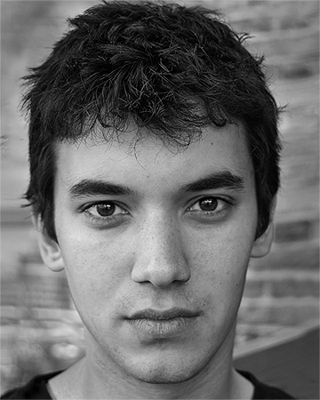
jefferies · portrait
Christopher Jefferies.jpg
Headshot of Christopher Jefferies, photographed 23 April 2009, before the 2010–11 coverage.
Author: Yesdijefferies
License: Public domain (author dedication)
Changes: Unmodified Commons file.
Commons file page ↗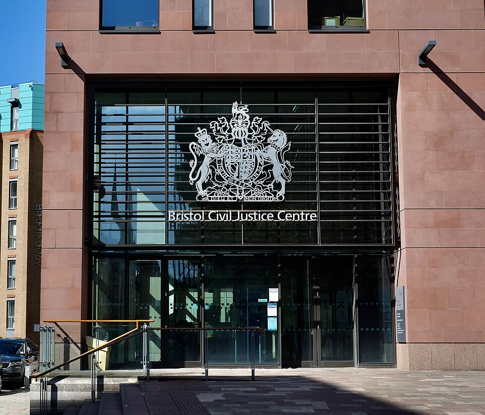
jefferies · generic Bristol context
Court building - geograph.org.uk - 6805721.jpg
A court building in Lawrence Hill, Bristol, photographed in 2021. This is not identified as a building in the Jefferies case.
Author: Anthony O'Neil
License: CC BY-SA 2.0
Changes: Downscaled by Wikimedia Commons thumbnail service to 960 × 822 pixels; no other changes.
Commons file page ↗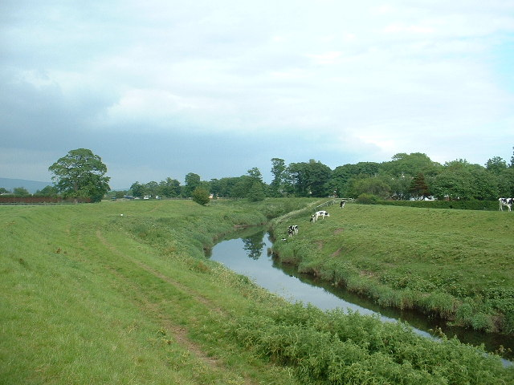
bulley · place context
River Wyre, near St Michael's on Wyre.jpg
River Wyre near St Michael’s on Wyre, photographed in 2005. Landscape only; it does not depict Nicola Bulley or the 2023 search.
Author: David Medcalf
License: CC BY-SA 2.0
Changes: Unmodified Commons file.
Commons file page ↗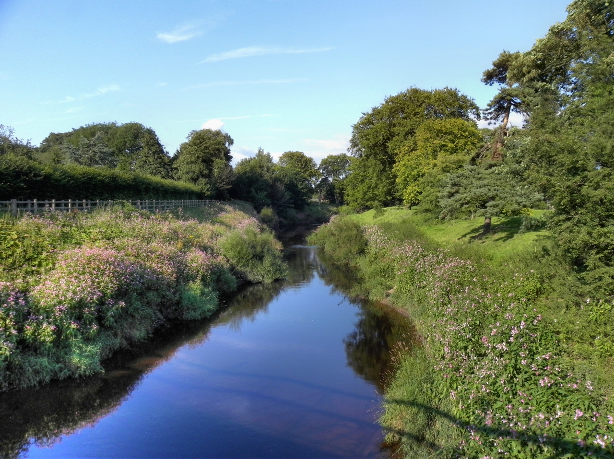
bulley · place context
River Wyre, St Michael's on Wyre - geograph.org.uk - 2528147.jpg
River Wyre at St Michael’s on Wyre, photographed in 2011. Landscape only; it does not depict Nicola Bulley or the 2023 search.
Author: David Dixon
License: CC BY-SA 2.0
Changes: Unmodified Commons file.
Commons file page ↗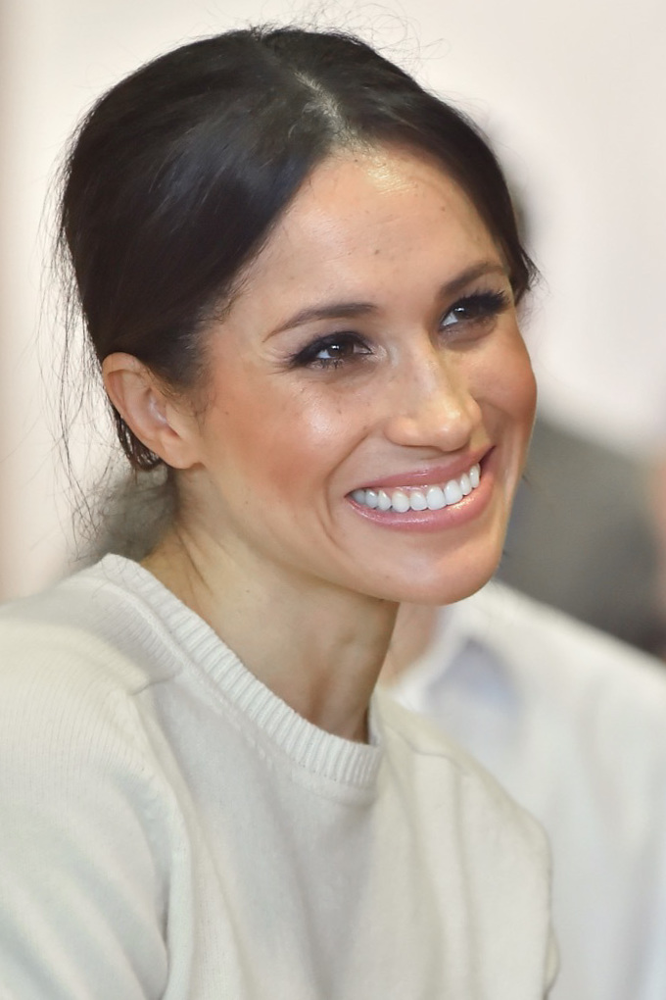
meghan-markle · portrait
Meghan Markle - 2018 (cropped).jpg
Meghan Markle during a Northern Ireland visit on 23 March 2018, before the defined letter-coverage sample.
Author: Northern Ireland Office
License: CC BY 2.0
Changes: Downloaded from the current Commons file as stored; Commons history records prior crop/colour edits.
Commons file page ↗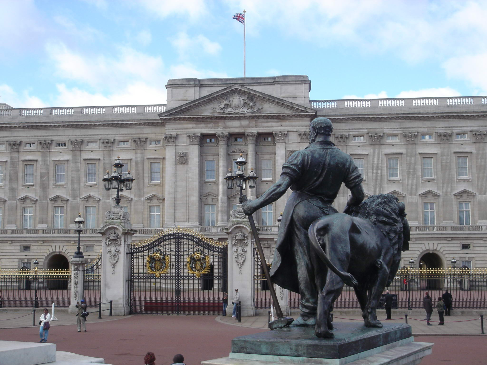
meghan-markle · generic royal institution context
Buckingham Palace.jpg
Buckingham Palace photographed in 2005. Generic location context; not evidence about Meghan Markle or the coverage sample.
Author: Christian Horcel
License: CC BY 2.0
Changes: Unmodified Commons file.
Commons file page ↗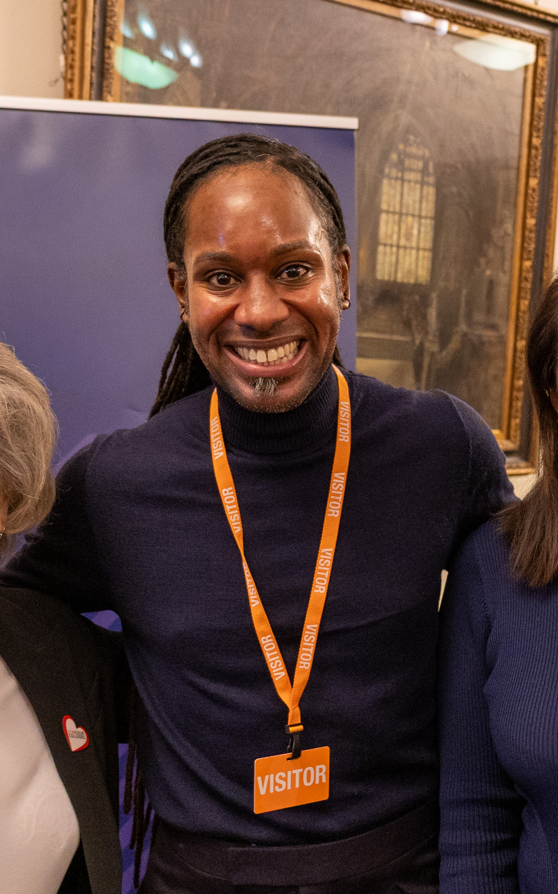
arday · portrait
Jason Arday 2024 (uncropped).jpg
Jason Arday photographed on 14 November 2024. This postdates the 2023 appointment coverage and is not contemporaneous.
Author: ConiferousForest19
License: CC0 1.0
Changes: Unmodified Commons file.
Commons file page ↗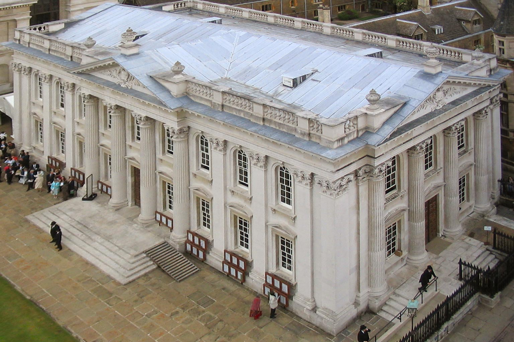
arday · institution context
Cambridge University Senate House.jpg
Cambridge University Senate House, photographed in 2010; campus context, not a specific building shown in the 2023 coverage.
Author: Cmglee
License: CC BY-SA 3.0
Changes: Unmodified Commons file.
Commons file page ↗Retrieved 13 October 2026. Technical details and checksums are recorded in assets/media-credits.json. Attribution is included for openly licensed assets even where public-domain dedication does not require it.